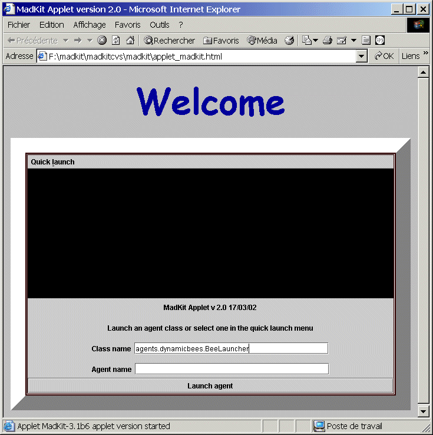

In the MadKit platform, the user interface is decoupled from the agents and runtime support. Thus, it possible to build various “host containers” that will embed a MadKit kernel and control agents. In this distribution, we include three standard containers: the MadKit desktop, a lightweight console booter, and an Applet container. There are other container available such as the JSP container.
The Desktop is presented here, let us see the two others.
{{Note: this section has been slightly changed in MadKit 4}}
It is possible to test the kernel only with the console-mode booter. Two scripts (functionally equivalent) are provided: console.sh for Unix and console.bat for Windows. You can test the kernel with:
$console.sh <Kernel> : MadKit/Aalaadin - by Ol. Gutknecht, J. Ferber and F. Michel (c) 1997-2002 <Kernel> : version: 3.1 - <Kernel> : -------------------- <Kernel> : Please file bug reports on http://bugs.madkit.org <Kernel> : MadKit Agent microKernel is up and running <Kernel> : [pong-java] PingPong agent Activated <Kernel> : [pong-java] Looking for a ping-pong group... <Kernel> : [pong-java] Nope ! I create one <Kernel> : [pong-java] Looking for a sport partner... <Kernel> : [provider-1] Ticket: plane <Kernel> : [provider-2] Ticket: train <Kernel> : [provider-3] Ticket: train <Kernel> : [provider-4] Ticket: plane <Kernel> : [provider-5] Ticket: plane <Kernel> : [provider-6] Ticket: train <Kernel> : [provider-7] Ticket: train <Kernel> : [provider-8] Ticket: train <Kernel> : [provider-9] Ticket: plane ... |
To start MadKit as console, you should write a configuration file which details the agent to be launched at startup. The structure of the configuration file is the same as for the desktop.
To test this mode, you must have a web browser that implements correctly the Java 1.2 specification. You must use a recent browser to make it work (it has been tested with Internet Explorer 5.0 and above and with Netscapte 4.xx and above).
Open the applet_madkit.html in your browser. you will get something like this:
Figure 7. Madkit in an applet

The applet interface presents a two fields panel: class and name. The first one is the fully qualified Java class name for the agent, (for instance agents.PingPong), the other is the usual name, which can be left blank. Agents are launched in independent windows, and closing a window kill the related agent.
You may also use the quick launch menu which contains a set of predefined agents. For instance you can launch a GroupObserver agent to observe the organization of the agents in the applet. You may also communicate with other kernels by launching the Communicatior. By defining your own Applet, it is possible to provide a very convenient and portable application framework.